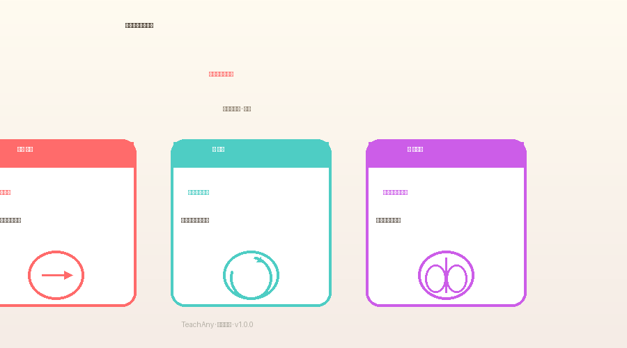
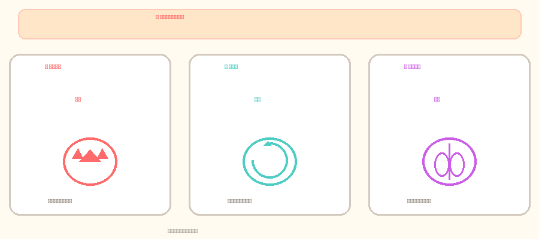
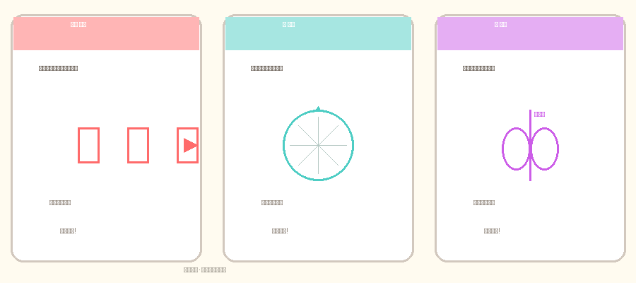

图形变身大闯关 — 发现图形移动的秘密！

长方形、正方形、三角形……这些都是平面图形。你会画它们、认它们。
图形除了"画出来"，还能"动起来"！推一推、转一转、对折一下……它们会变成什么样？为什么有些图形怎么转都一样？
平移、旋转、轴对称——三种让图形"变身"的魔法，发现它们在生活中无处不在！
选一个你好奇的问题，后面的探索会围绕它展开！
👆 选择或输入一个问题，本课会围绕它展开。
3道小题，试试看！（答完点下方"揭晓答案"）
1. 下面哪个图形对折后两边能完全重合？
2. 推桌子从教室前移到后，桌子的大小会？
3. 时钟的指针从12走到3，发生了什么？

🪞 轴对称就像是照镜子：把一个图形沿着一条直线对折，对折后两边能完全重合，这条直线就叫对称轴。
✨ 想一想：蝴蝶的翅膀、人脸的五官、剪纸图案……你还能想到什么是对称的？
试试移动鼠标看对称效果 👆
➡️ 平移就是让图形沿着直线方向滑动一段距离。图形只是换了位置，方向和大小都没有改变！
✨ 想一想：推抽屉、电梯上下、滑滑梯……这些都是平移！
🔃 旋转就是图形围绕一个中心点转动。旋转时图形的大小不变，但方向改变了。
✨ 想一想：风车转动、时钟指针、旋转木马……还有一个秘密：它们都绕着同一个点转！
💡 观看动画，直观感受平移、旋转、对称的变化过程
💡 拖动三角形顶点或滑块，看看旋转中心和角度怎么影响图形
点击右侧点，画出左侧图形的对称图案！
每题选一个答案，答完点"提交检查"看结果
① 电梯从1楼升到5楼
② 摩天轮上的小房子
③ 蝴蝶的两只翅膀
④ 打开窗户 (绕合页转动)
⑤ 把书从桌子左边推到右边
1. 正方形有几条对称轴？
2. 一块三角形向右平移5格后
3. 下面哪个是旋转现象？
把△向右平移4格，平移后的三角形________
✅ 答案：和原来一模一样（大小形状都不变）
💡 判断关键：平移只有位置变了，图形的"长相"没变。
时钟从12:00走到12:15，分针发生了什么运动？
✅ 答案：旋转——分针绕表盘中心顺时针旋转了90°
💡 旋转三要素：绕哪个点、往哪转、转了多少度。
长方形有几条对称轴？正方形呢？
✅ 长方形有2条，正方形有4条（含2条对角线）
💡 正方形是特殊的长方形，每条边都相等，所以多了2条对角线对称轴！
→ 判断标准：物体是否沿直线移动？位置变了，方向和大小没变？
常见正确项：推窗、滑滑梯、电梯 / 常见干扰项：钟摆（旋转）、折纸（对称）
→ 方法：先画出所有可能的对折线（横、竖、斜），再逐一检查是否重合
关键记忆：正方形4条、长方形2条、等边三角形3条、圆无数条
→ 步骤：①找到旋转中心 ②连接中心和关键点 ③将连线旋转指定角度 ④连点成形
在GeoGebra页面拖动滑块练习，观察每个点的运动轨迹！
平移、旋转、对称都不会改变图形的大小和形状！只有"缩放"才会。考试常考："平移后图形变大了对吗？"——当然不对！
旋转是"转动"，对称是"对折"。一个关键判断：旋转后的图形和原图方向不同，但无法通过对折重合；轴对称图形对折后能重合。
不是所有图形都有对称轴！一般三角形没有对称轴，等腰三角形有1条，等边三角形有3条，正方形有4条，圆形有无数条。
旋转一定要说清楚"绕哪个点转"。同样的图形，绕不同的中心点旋转，结果完全不一样！GeoGebra里拖动中心点试试看~
沿直线滑动
位置变，方向大小不变
绕中心点转动
方向变，大小不变
沿对称轴对折
两边完全重合

🎉 图形变换不变的是形状和大小，变的是位置或方向！
本课在知识树中的位置：前置 → 本课 → 后续